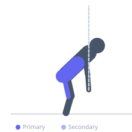
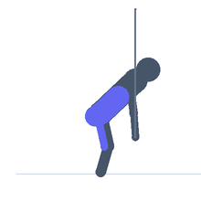

Exercise guide / Banded Good Morning
Banded Good Morning
A good morning exercise performed with a resistance band looped over the neck and under the feet, providing accommodating resistance that increases as the athlete stands. The band version allows training the hip hinge pattern with minimal equipment and is excellent for warming up the posterior chain or higher-rep conditioning work.
Primary muscles
gluteus maximus
biceps femoris long head
erector spinae
Secondary muscles
semitendinosus
gluteus medius
adductor magnus
Stabilizers
transverse abdominis
Equipment
Resistance Band (Loop / Mini Band)
Optional
Standard Barbell


Starting position
- Stand with a resistance band loop under both feet and looped over the upper back or neck. Stand tall with knees soft.
Setup
- Step both feet onto the center of a resistance band loop. Loop the top over the back of the neck like a barbell.
Steps
- Step 1: Keep the knees slightly bent and the spine neutral.
- Step 2: Hinge at the hips and push the hips back, allowing the torso to lower forward.
- Step 3: Lower until a strong hamstring stretch is felt or the torso is roughly parallel to the floor.
- Step 4: Drive the hips forward to return to standing, squeezing the glutes at the top.
Coaching cues
- Push the hips back
- Squeeze the glutes at the top
Breathing
- Inhale on the hinge. Exhale on the drive to standing.
Range of motion
- Hinge until a strong hamstring stretch is felt. Full hip extension at the top.
Tempo
- 2-0-2-0
Common mistakes
- Rounding the lower back during the hinge
- Bending the knees excessively, turning it into a squat
Safety
- Keep the knees soft but fixed — the bend should not change during the movement
Training
- strength: 3–8 reps
- hypertrophy: 8–15 reps
- endurance: 15–25 reps
- strength: 3–5 sets
- hypertrophy: 3–4 sets
- endurance: 2–3 sets
- Rest: {'strength': 180, 'hypertrophy': 90, 'endurance': 45}